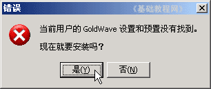
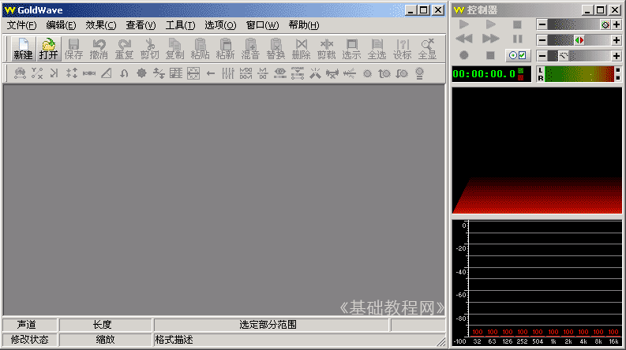
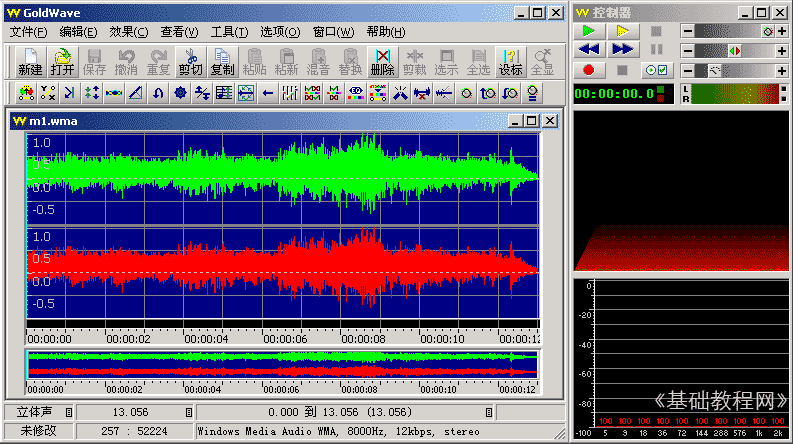
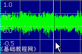
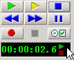

Goldwave 基础入门教程
一、运行程序 返回
Goldwave是一款音乐编辑软件，体积小巧，操作简单，用来处理音乐文件挺好的，下面我们通过一个练习来学习如何运行它；
该文件汉化版，可以在华军软件园下载
1、启动Goldwave
1）点击桌面上的Goldwave图标，或者在安装文件夹中双击Goldwave图标，就可以运行Goldwave；
2）第一次启动时会出现一个提示，这儿点“是”即可，自动生成一个当前用户的预置文件；

3）顺利进入后出现一个灰色空白窗口，旁边是一个暗红色的控制器窗口，它是用来控制播放的；

2、打开文件
1）点击工具栏上的第二个按钮“打开”按钮，在出来的打开对话框中选择一首音乐文件，打开它；
本课images文件夹中有一首 m1 文件，可以用作练习；

2）打开文件后，窗口中间出来彩色的声波，中间两个表示是立体声两个声道，下面有音乐的时间长度，右边的播放控制器也可以用了；
绿色三角是播放按钮 ，蓝色方块是停止，下面的两道竖线是暂停，红色圆点是录音按钮；
，蓝色方块是停止，下面的两道竖线是暂停，红色圆点是录音按钮；
3）点一下绿色的播放按钮，窗口中出现一条移动的指针，表示当前播放的位置，右边的控制器里显示了精确的时间；
 
3、练习
1）打开音乐文件 m1 记下音乐的长度；
2）播放一下音乐文件，在2.6秒处暂停音乐，然后继续播放；
本节学习了使用Goldwave的基础知识，如果你成功地理解并完成了练习，请继续学习下一课内容；
本教程由86团学校TeliuTe制作|著作权所有
基础教程网：http://teliute.org/
美丽的校园……
转载和引用本站内容，请保留作者和本站链接。